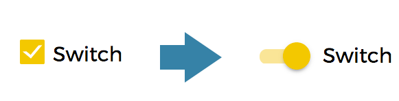

Delivery Stylesheet
Download
Optimized Stylesheet
Customizable Stylesheet
Documentation
Customization
ColorButton color
Button Animation
Array
Switch
Import the Stylesheet
Then you shall import the Stylesheet into your RunMyProcess project:
- Launch the RunMyProcess IDE
- Open your project's Web Interface
- Click on the Stylesheet tab
- Replace the main Stylesheet
- Select the Custom radio button in the popup windows
- Click on the Upload button
- Select the file from your local directory
- Selected the uploaded file in the list
- Click on the Validate button
- You're done
Customize the colors
- PrimaryColor : Black, used for navigation, section and tab
- SecondaryColor : Yellow, used for report, input and array
- TertiaryColor : Blue, used for the report icon
To change a color, open the CSS file with your code editor and then you simply need to search and replace the corresponding color code with the color code you want
Customize the button colors
The default CSS gives you the option to use four different color for the buttons :
- Default → Green → no suffix
- Save → Orange → suffix save
- Cancel → Red → suffix cancel
- Other → Blue → suffix other
In order to use this color you have to add the corresponding suffix in the layout tab of the button in the IDE

Customize the button animation
You can customize the click effect for each button with a new suffix Bubble after the color
Customize array
If you have disabled the "Add rows" and "Delete rows" features on an Array widget, you will still see the corresponding column in this widget on the Web Interface (the first column).

If you wish to hide this column, you can add the CSS class suffix "hideBtn" in the Layout tab on the widget configuration.


Customize the switch widget
The default display for the switch widget is as follow
You have the possibility to use a more modern style by just adding the CSS suffix switch
About
Presentation
This template is intended to be used by RunMyProcess Delivery Team as an additional CSS layer on top of portal2 CSS.
Version: 1.0.5
Support
Contributors
Archives
- runmyprocess-delivery-app-1.0.0.css
- runmyprocess-delivery-app-1.0.0.min.css
- runmyprocess-delivery-app-1.0.1.css
- runmyprocess-delivery-app-1.0.1.min.css
- runmyprocess-delivery-app-1.0.2.css
- runmyprocess-delivery-app-1.0.2.min.css
- runmyprocess-delivery-app-1.0.3.css
- runmyprocess-delivery-app-1.0.3.min.css
- runmyprocess-delivery-app-1.0.4.css
- runmyprocess-delivery-app-1.0.4.min.css
- runmyprocess-delivery-app-1.0.5.css
- runmyprocess-delivery-app-1.0.5.min.css
- runmyprocess-delivery-home-1.0.0.css
- runmyprocess-delivery-home-1.0.0.min.css
- runmyprocess-delivery-home-1.0.1.css
- runmyprocess-delivery-home-1.0.1.min.css
- runmyprocess-delivery-home-1.0.2.css
- runmyprocess-delivery-home-1.0.2.min.css
- runmyprocess-delivery-home-1.0.3.css
- runmyprocess-delivery-home-1.0.3.min.css
- runmyprocess-delivery-home-1.0.4.css
- runmyprocess-delivery-home-1.0.4.min.css
- runmyprocess-delivery-home-1.0.5.css
- runmyprocess-delivery-home-1.0.5.min.css
- runmyprocess-delivery-mobile-1.0.1.css
- runmyprocess-delivery-mobile-1.0.1.min.css
- runmyprocess-delivery-mobile-1.0.2.css
- runmyprocess-delivery-mobile-1.0.2.min.css
- runmyprocess-delivery-mobile-1.0.3.css
- runmyprocess-delivery-mobile-1.0.3.min.css
- runmyprocess-delivery-mobile-1.0.4.css
- runmyprocess-delivery-mobile-1.0.4.min.css
- runmyprocess-delivery-mobile-1.0.5.css
- runmyprocess-delivery-mobile-1.0.5.min.css
Copyright © Fujitsu RunMyProcess - 2017